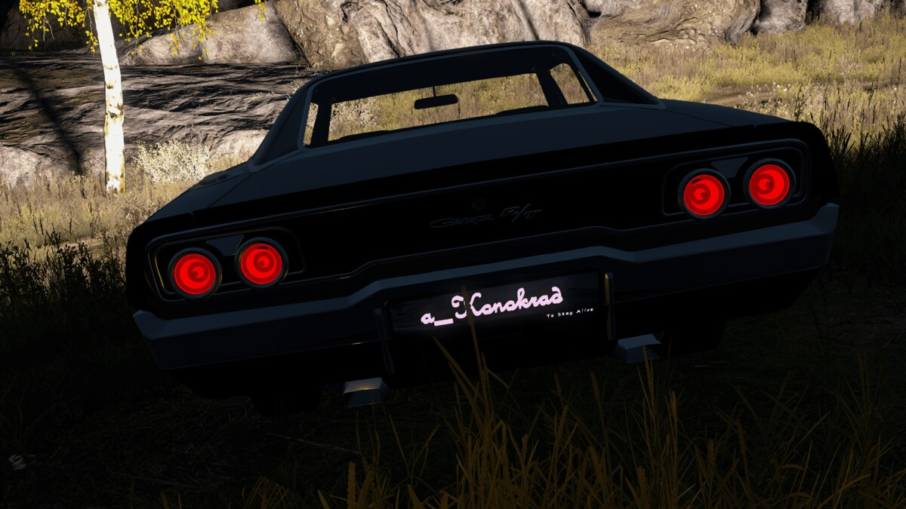
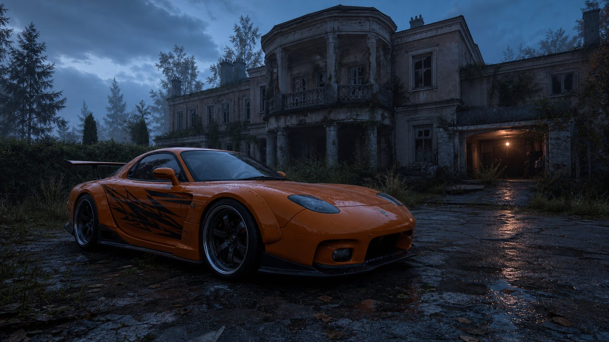
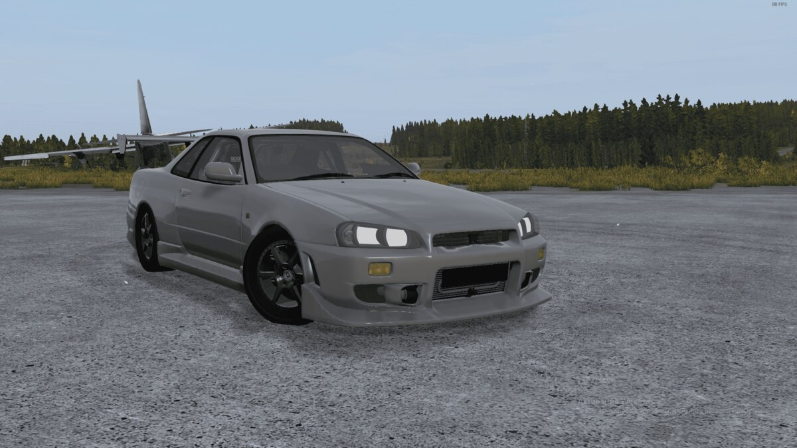
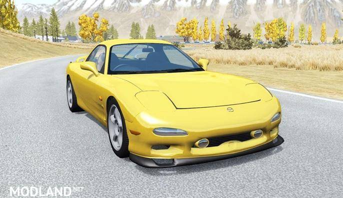
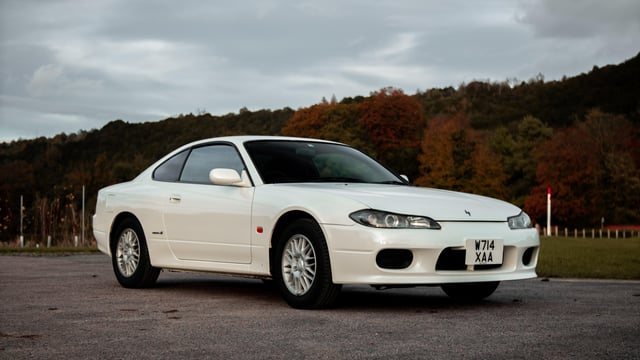

FORÇA CLÁSSICA
Dodge Charger
Referência · R/T 1970
TRANSMISSÃO DO COLECIONADOR
A Mansão do Milionário e o Tesouro sobre Rodas.
Uma gangue tomou a mansão. O antigo dono ainda guarda a chave. Entre na propriedade, recupere a fortuna e decida o destino de uma máquina lendária.
CONCEITO EM PLANEJAMENTO · NÃO É UM MOD INSTALÁVEL

COMBATE CONTRA IA
EXPLORAÇÃO & EXTRAÇÃO
01 / A HISTÓRIA
Antes do colapso, Viktor Romanov colecionava luxo e carros de corrida. Quando o vírus chegou, ele se refugiou na mansão com sua fortuna — e trancou sua joia mais preciosa na garagem.
Agora, Os Renegados ocupam a propriedade. O líder carrega o cartão da garagem. Romanov, infectado e isolado na suíte, continua com a chave do carro. O Colecionador tem uma proposta para quem conseguir recuperar os dois.
02 / A OPERAÇÃO
Elimine os vigias do pátio, dos jardins e das entradas. Abra caminho sem deixar o grupo exposto.
PERÍMETROAvance pelos corredores, recolha relíquias e derrote o chefe da gangue para recuperar o cartão da garagem.
INVASÃO & LOOTAbra a suíte e derrote o milionário infectado e seus seguranças. A chave original é o próximo objetivo.
INFECTADO ESPECIALAbra a garagem, instale as peças, complete água e combustível. Venda o carro ao Colecionador ou fique com ele.
MONTAGEM & EXTRAÇÃO03 / O TESOURO SOBRE RODAS
Inspirações visuais já presentes no repositório. O veículo final depende dos mods disponíveis e da homologação do servidor.

Referência · R/T 1970

Referência · GT-R R34

Referência · FD

Referência · S15
A GRANDE ESCOLHA
Venda o veículo por uma fortuna no Colecionador ou leve uma máquina exclusiva para a sua garagem. As relíquias da mansão podem render uma recompensa à parte.
Preços e exclusividade são sugestões do roteiro e precisam de configuração e balanceamento. Respeite a posse do grupo que iniciou o evento: roubo de loot e de veículo é proibido nas regras propostas.
04 / ARQUIVOS DA OPERAÇÃO
História, fases, loadouts, economia, regras e textos prontos para divulgação.
ADMINISTRAÇÃODecisões técnicas e checklist para testar o evento antes de anunciá-lo.
REFERÊNCIASImagens e áudio organizados por categoria, com duplicatas identificadas.
VERIFICAÇÃOIntegridade dos arquivos, ajustes realizados e pendências do projeto.
Os documentos podem abrir como texto ou download no navegador. Para uma leitura formatada, use o GitHub ou um editor de Markdown.